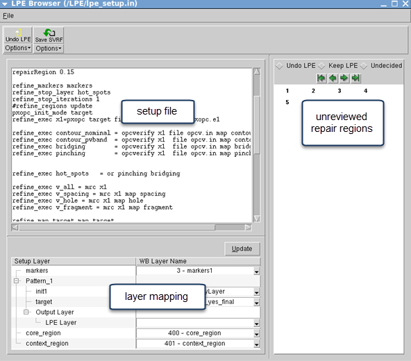
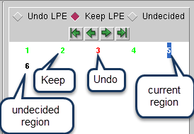

The LPE Browser provides a simple way to
compare the original OPC results and the LPE output, and then decide
which to keep in the design. It can run LPE to fix merged regions
or generate an SVRF file you can run in batch mode.
Restrictions and Limitations
Procedure
- Open the
layout file saved from the Calibre LPE run in Calibre WORKbench.
- Select to
open the LPE Browser window.
- In LPE
Browser, select and navigate to the setup
file used by the RET REFINE operation.
Figure 1. LPE Browser
Panels
- In the
layer mapping pane, identify the layout layer for each setup file
layer.
If you only want to browse results without using the
other LPE Browser capabilities, you can skip this step. A full layer
mapping is required, though, to undo LPE changes or re-run LPE.
- Start reviewing
the results. You can either click a number in the panel to the right
or use the green arrow keys to move between them.
As you move between the numbers, the Calibre WORKbench
view updates to show the region in the center. Zoom in and adjust
layers as required to compare original and LPE results.
- Use the
radio buttons above the navigation controls to mark each region
with “Undo LPE” or “Keep LPE.” The default is “Undecided”.
Figure 2. LPE
Browser Region Decisions
- If there
are any regions to undo, choose one of the following methods: